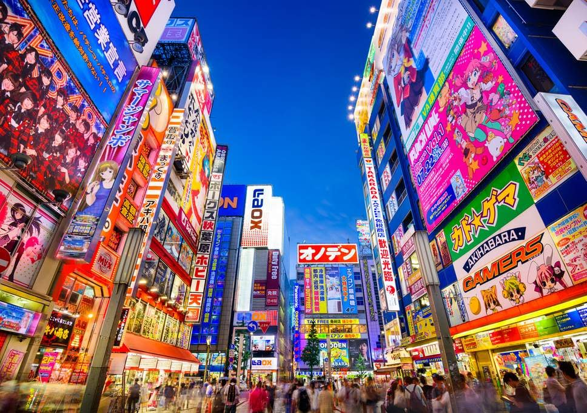

Tokyo - Why?
One city I've always wanted and dreamed to visit is Tokyo, in Japan. The city has a lot of fantastic landmarks and great history. This WebPage is designed to let you easily see the majesty that is Tokyo.
Please use the navigation panel to look at different facts about the city of Tokyo.